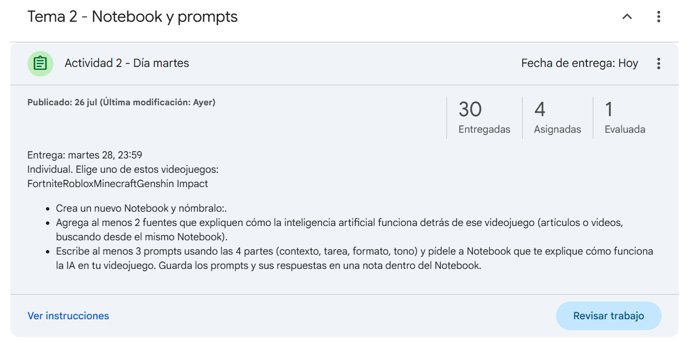
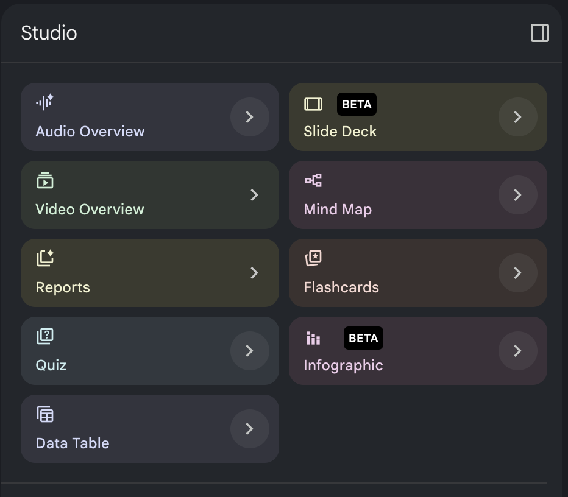

Repaso y recapitulación de la Actividad 2 - Día martes
La entrega fue un Notebook individual sobre un videojuego (Fortnite, Roblox, Minecraft o Genshin Impact), investigando cómo funciona la IA detrás de él, con al menos 1 fuente, los prompts guardados, un infome, un deck y una infografía.

Gemini con imágenes y archivos
Gemini puede analizar lo que le suban, no solo lo que le escriban. Si le suben una foto de una página del libro, puede identificar el tono del texto o resumir esa parte. Si le suben un documento largo, puede darles un resumen sin que tengan que leerlo completo. Esto es distinto a Notebook: aquí es una consulta rápida y puntual, no una fuente que se queda guardada.
Gemini para creatividad
Esta es la parte que conecta con lo que van a necesitar mañana y el viernes. Usando las herramientas de Studio que ya vieron en Notebook (Slide Deck, Video Overview, Infographic, Mind Map), pueden generar contenido visual con una dirección creativa clara: elegir una paleta de colores, un estilo de imagen, una estructura de presentación.
Gemini también puede generar imágenes originales para ilustrar ideas o conceptos, útil para portadas, fondos, o elementos gráficos de cualquier proyecto.

Límites y cuidado: qué NO hacer
La IA puede "alucinar": inventar información que suena creíble pero no es cierta. Por eso, antes de usar cualquier dato en una entrega o exposición, hay que verificarlo (revisando la referencia que da Notebook, o buscándolo en otra fuente).
Tampoco se debe compartir información personal con la IA (dirección, teléfono, contraseñas), y el uso dentro de la escuela debe ser siempre responsable: para aprender e investigar más rápido, no para copiar sin entender.
Libro asignado por fila


Actividad del día
Notebook del libro asignado
Trabajen en parejas dentro de su equipo: cada pareja cubre la mitad de los puntos, y al final se juntan para armar la presentación completa. Con los 10 puntos resueltos, escriban el guion completo: quién dice qué, en qué orden y cuánto tiempo le dedican a cada parte para que quepa en los 5 minutos. Ensayen leyéndolo en voz alta al menos una vez antes de mañana.
Puntos que incluir del libro en su Notebook
| # | Descripción |
|---|---|
| 1 | Título, autor y año de publicación. Nombres completos de los integrantes del equipo. |
| 2 | Resumen de la trama: inicio, desenlace, final. |
| 3 | El mensaje principal del autor sobre tecnología. |
| 4 | Un personaje clave y por qué es importante para la historia. |
| 5 | Una cita o pasaje representativo del libro (corto). |
| 6 | Cómo se conecta el mensaje del libro con la actualidad (redes sociales, IA, tecnología de hoy). |
| 7 | Elementos visuales para la presentación: colores, imágenes, estilo. |
| 8 | Orden de la presentación: quién habla en qué parte (tienen 5 minutos en total). |
| 9 | Verificar en Notebook que cada punto tiene una referencia real del libro. |
| 10 | En su notebook deben incluir un deck, una infografía, un informe y un video. |
Rúbrica de evaluación
| Criterio | Qué se evalúa | Peso |
|---|---|---|
| Contenido y mensaje | Los 10 puntos están cubiertos y el mensaje del libro queda claro | 35% |
| Uso de Gemini/Notebook | Se nota que investigaron con la herramienta, no solo opinión personal | 20% |
| Creatividad y diseño | Elementos visuales, colores, imágenes, algo memorable | 25% |
| Trabajo en equipo | Todos participan y se nota reparto de responsabilidades | 10% |
| Tiempo | La exposición dura cerca de los 5 minutos, ni corta ni larga | 10% |